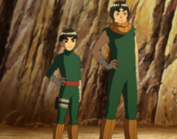
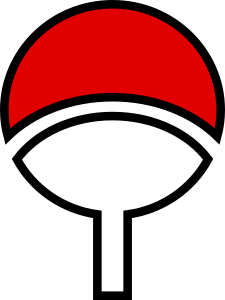
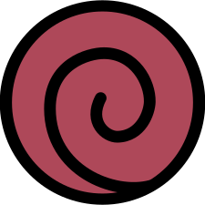

The Aburame Clan (油女一族, Aburame Ichizoku) is one of the four noble clans of Konohagakure. At birth, members of this clan are offered to several special breeds of insects as a nest, residing just under their host's skin. These insects will then live in symbiosis with their host from that point on. Because of this, its members are characterised by their use of insects as weapons.The clan members may also carry additional insects in jars or gourds with them on missions. The insects can leave and enter their host's body through various pores. They feed on chakra as a food source, making them quite deadly. The relationship between the shinobi and the insects is mutually beneficial. The host grants the insects shelter and allows them to feed off their chakra, their body becoming a living hive of tens of thousands of these insects, and in return the insects do the user's bidding, allowing the shinobi to perform ninjutsu-like techniques without the use of hand seals or chakra conversion. A major defining trait of the Aburame clan is that all of its known members' eyes are obscured usually by glasses, as well as they wear clothing that usually cover up most of their body.
The Akimichi Clan (秋道一族, Akimichi Ichizoku) is one of the four noble clans of Konohagakure.[1] Many of their clan's techniques revolve around the manipulation of their bodyweight and size through the use of Yang Release. It has had fifteen family heads, with Chōza Akimichi being the fifteenth. Chōji Akimichi is slated to become the sixteenth head.Members of the clan possess great physical strength and are able to quickly convert calories into chakra, which they then use in their various secret techniques. Most of these techniques rapidly consume the user's chakra during use, and maintaining them during a prolonged battle can be tiring. For this reason the Akimichi have high chakra levels and eat a lot in order to build up or replenish their chakra reserves. As a tribute, members of the clan wear the kanji for "food" (食, shoku) on the their clothing. If standard calories aren't enough for a battle, Akimichi can use the clan's Three Coloured Pills to convert excess fat into chakra, at the cost of one's health.
The Hatake Clan (はたけ一族, Hatake
Ichizoku) is one of the many clans that reside in Konohagakure.
Its only known members are renowned ninja: Konoha's White Fang (木ノ葉の白い牙, Konoha no Shiroi Kiba) Sakumo, and his
son Copy Ninja Kakashi (コピー忍者のカカシ, Kopī Ninja no Kakashi). The latter would later become the Sixth Hokage
following the end of the Fourth Shinobi World War. The clan possessed at least one heirloom: the White Light
Chakra Sabre, which produced white chakra when swung.
The Hyūga Clan (日向一族, Hyūga Ichizoku) is one of the four noble clans of Konohagakure, as well as the strongest clan in the village. All members born into this clan possess the Byakugan, a kekkei genkai that gives them extended fields of vision and the ability to see through solid objects and even the chakra circulatory system, amongst other things. Members of this clan also possess an innate ability which allows them to expel chakra from any of the tenketsu in their body.The Hyūga clan are descendants from the Ōtsutsuki clan, specifically from Hamura Ōtsutsuki's lineage. As a result, they are also distant cousins of the Uchiha, Senju, Uzumaki, and Kaguya clans. They are considered to be one of, if not currently, the most powerful clan in Konohagakure. Their fame and prowess stretches far and wide, leading others to both praise and covet their abilities. During the Fourth Shinobi World War, a Kumo-nin noted that they had a hard time against them during a previous war.
The Inuzuka Clan (犬塚一族, Inuzuka Ichizoku) or Inuzuka Family (犬塚家, Inuzuka-ke) is a family of shinobi in Konohagakure known for their use of ninken as fighting companions and are easily identified by the distinctive red fang markings on their cheeks.The members are given their own canine partner(s) when they reach a certain age. Thereafter, the shinobi and their dog(s) are practically inseparable. The shinobi and canine allies fight using Cooperation Ninjutsu, such as the Fang Passing Fang or Fang Rotating Fang techniques amongst others, that take advantage of their teamwork and their sharp claws and teeth. The clan members are also able to communicate with canines even if unlike Kuromaru, the dogs cannot talk. The members of this clan, much like their canine partners, have greatly enhanced senses, especially their sense of smell. By concentrating chakra to their noses, this sense is amplified to an even greater extent allowing the user to be able to detect, track and monitor targets from a fairly long distance away. The clan's fighting style primarily revolves around their enhanced speed, strength and agility granted by the Four Legs Technique and other canine-based attacks, in conjunction with the tactical advantages granted by their heightened senses.
The Lee Clan (リー一族, Rī Ichizoku) is one of the many clans that reside in Konohagakure. The two known members of this clan — Rock Lee and his son Metal Lee — are known for their taijutsu skills.During the Fourth Shinobi World War, someone bearing a strong resemblance to Rock Lee and Might Guy was seen on the battlefield in the anime. In episode 20 of Naruto SD: Rock Lee no Seishun Full-Power Ninden, he is credited as "Pac Lee" (パック·リー, Pakku Rī). Unlike other characters in the series, the known members of this clan follows the western naming convention (personal name followed by family name).
The Nara Clan (奈良一族, Nara Ichizoku) or Nara Family (奈良家, Nara-ke) is one of the many clans of Konohagakure. They are known for tending deer and their ability to manipulate shadows through the use of Yin Release. Two of its members, Shikaku and his son Shikamaru, are well known for their high-level of intelligence, and both have served as advisors to the Hokage. After Shikaku's death, Shikamaru became the head of the clan.The clan has kept a book with various medicine preparations and effects for generations, implying that they are skilled in the area of medicine and healing arts. Among the medicine described in this book are the secret pills used by the Akimichi clan. The Nara also have a special bond with the deer of the Nara Clan Forest, and only members of the clan are allowed inside without the deer attacking unless an outsider is given permission.
The Sarutobi Clan (猿飛一族, Sarutobi Ichizoku) is an influential clan from Konohagakure. It has produced several renowned members who have held positions of high authority, including the Third Hokage; whose son, Asuma, held membership in the Twelve Guardian Ninja, while his other child served directly under the Hokage along with their spouse as Anbu. All known members have also been devout observers of the Will of Fire.After Konohagakure's formation following the Warring States Period, the Sarutobi were amongst the first set of clans to ally themselves with the Senju and Uchiha-founded village, alongside the Shimura clan. Not much is known of this clan but, in order to strengthen the unity between the Akimichi, Nara, and Yamanaka clans, it has become a tradition that one of the Sarutobi give each of the members of the current Ino–Shika–Chō trio special earrings when they swear their oaths. Several members were also seen during the Fourth Shinobi World War in the battle against Madara, Obito Uchiha, and the Ten-Tails. They used the Fire Release: Great Flame Technique to quickly dry the quicklime which was covering the beast.[4]
The Senju Clan (千手一族, Senju Ichizoku) was one of the clans responsible for founding the first shinobi village: Konohagakure — the other being their rival Uchiha clan. Although the clan itself no longer appears to exist as a group, the Senju continue to influence Konoha's politics through their philosophy of the Will of Fire and the corresponding interpretation of the role of the Hokage position. As such, three Senju have achieved the position of Hokage.As descendants of Asura Ōtsutsuki, the Senju inherited his powerful life force and chakra, and through Hashirama Senju eventually manifested as Wood Release. Compared to other shinobi clans, the Senju didn't specialise in one area, instead mastering ninjutsu, taijutsu, and genjutsu to give them a wide variety of skills to combat their enemies. Due to this they acquired their name,"Senju" (千手, Literally meaning: "a thousand skills", "a thousand hands"), in reference to their being "the clan with a thousand skills" (「千の手を持つ一族」, "sen no te o motsu ichizoku"). It is due to this they were the Uchiha Clan's primary rivals, and ultimately crushed their will to fight by the end of the Warring States Period.
The Uchiha Clan (うちは一族, Uchiha
Ichizoku) is one of the four noble clans of Konohagakure, reputed to be the village's strongest because of
their Sharingan and natural battle prowess.[2]
After helping found Konoha decades ago, the Uchiha grew
increasingly isolated from the village's affairs, culminating in most of their deaths during the Uchiha Clan
Downfall. Few Uchiha now survive into the present day.
The Uchiha are descendants of Indra Ōtsutsuki, the
elder son of Hagoromo Ōtsutsuki. Through Indra, the Uchiha inherited Hagoromo's "eyes", granting them powerful
spiritual energy and chakra. As part of the so-called "Curse of Hatred" first displayed by Indra, Uchiha are
subject to powerful emotions: these emotions typically start as love for a friend or family member that then
become overpowering hatred when the object of their love is lost. This loss, whether actually experienced or
merely threatened, awakens an Uchiha's Sharingan. It is due to the Sharingan that the Uchiha have received much
of their fame and notoriety.
The Uzumaki Clan (うずまき一族,
Uzumaki Ichizoku) is formerly a prominent clan in Uzushiogakure. Since its disbandment, most of its known
members reside in Konohagakure.[1] Despite its demise, fifteen years after the Fourth Shinobi World War the clan
is once again active.
The Uzumaki, being descendants of Asura Ōtsutsuki, also shared distant blood relation
with the Senju clan. Through the years, the Uzumaki and Senju kept close ties, with members at times marrying
between clans, as with Hashirama Senju and Mito Uzumaki. Following the founding of Konohagakure at the end of
the Warring States Period, the Senju chose to symbolise their clans' friendship by adding the Uzumaki's emblem
to Konoha's flak jackets. Konoha and the Uzumaki's own Uzushiogakure remained close allies over the following
decades, with the Uzumaki providing fūinjutsu (among other things) to Konoha whenever there was a need. In time,
the Uzumaki Clan's Mask Storage Temple was even constructed on Konoha's outskirts.
The Yamanaka Clan (山中一族,
Yamanaka Ichizoku) is a family of shinobi found in Konohagakure. They specialise in mind related techniques, and
they own and run a flower shop in the village. They traditionally lead the Konoha Barrier Team.
The members
of this clan specialise in mind-related techniques which makes them experts at intelligence gathering, espionage
and interrogation amongst other things. They have also displayed sensory abilities and their techniques include
transferring their consciousness, reading minds and communicating telepathically. The flower symbol of this clan
is the bush clover which symbolises a "positive love". Most members of the Yamanaka clan wear their hair in a
long ponytail, which appears to be traditional.